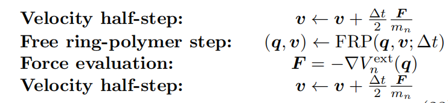

Numerical Methods
Stabilizing Ring-Polymer Free Motion with a Cayley Transform
This note organizes my benchmark experiments around the Cayley modification for path-integral and ring-polymer molecular dynamics. The main question is narrow: why can the standard exact normal-mode propagation of the free ring polymer become numerically fragile, and why does replacing it with a Cayley transform help?
The discussion follows the paper Cayley modification for strongly stable path-integral and ring-polymer molecular dynamics by Korol, Bou-Rabee, and Miller, J. Chem. Phys. 151, 124103 (2019), together with a few small Python benchmarks.
The splitting where the issue appears
In a standard microcanonical RPMD integrator, the Liouvillian is split into an external-potential part and a free ring-polymer part:
The middle step, \(e^{\Delta t L_0}\), is usually solved exactly in the ring-polymer normal-mode representation. That choice is accurate for the isolated harmonic motion, but the paper's point is that exactness of this substep does not automatically imply good numerical behavior for the whole timestep map.

A minimal oscillator model
The instability can already be seen in a two-dimensional harmonic system:
Exact propagation over one timestep gives
The eigenvalues are \(e^{\pm i\omega\Delta t}\). They collide when
In a ring polymer, every normal-mode frequency \(\omega_k\) contributes its own set of dangerous timesteps. For a bead number \(P\), this creates a discrete set of resonance points that depend only on the ring-polymer frequencies.
The Cayley replacement
The Cayley modification keeps the same normal-mode workflow, but replaces the exact exponential by
This is still a second-order approximation to the exact exponential, which is enough for the surrounding second-order splitting. More importantly, for the harmonic oscillator it avoids the eigenvalue collision mechanism that causes the loss of strong symplectic stability.

A small implementation sketch
For a single normal mode, the replacement can be written directly as a small matrix solve:
import numpy as np
def cayley_matrix(omega, dt):
A = np.array([[0.0, 1.0], [-omega**2, 0.0]])
I = np.eye(2)
return np.linalg.solve(I - 0.5 * dt * A, I + 0.5 * dt * A)In the full ring-polymer step, this matrix is applied mode by mode after the FFT into normal-mode coordinates, then transformed back to bead coordinates.
Benchmark setup
I used a small test case with \(P=6\) beads and \(m=\hbar=\beta=1\). The ring-polymer frequencies are
The benchmark scans \(\Delta t\) from 0 to 1, marks the predicted resonance positions with red dashed lines, and monitors the final-to-initial energy ratio. Each timestep point is evolved for 300 steps, with a safety break when the energy ratio becomes extremely large.


A more direct comparison at \(\Delta t=0.3\) makes the contrast even clearer. With exact normal-mode propagation, the bead trajectories and normal-mode energy grow rapidly. With the Cayley map, the trajectory remains bounded over the same number of steps.


Side note: symplectic does not mean unconditionally stable
I also checked the familiar leapfrog update for a one-dimensional harmonic oscillator. Leapfrog is symplectic, but its eigenvalues leave the unit circle once \(\Delta t > 2/\omega\). So the lesson is not simply "use a symplectic method"; the timestep map also needs the right stability structure.

Takeaways
- Exact normal-mode propagation of the free ring polymer can create resonance instabilities at specific timesteps.
- The problematic timesteps are determined by the ring-polymer frequencies, not by detailed chemistry of the external potential.
- The Cayley transform is a local replacement for the free ring-polymer step: same workflow, same second-order accuracy in the full splitting, better strong stability behavior.
- In the small benchmarks here, the Cayley version removes the sharp resonance spikes seen with exact propagation.